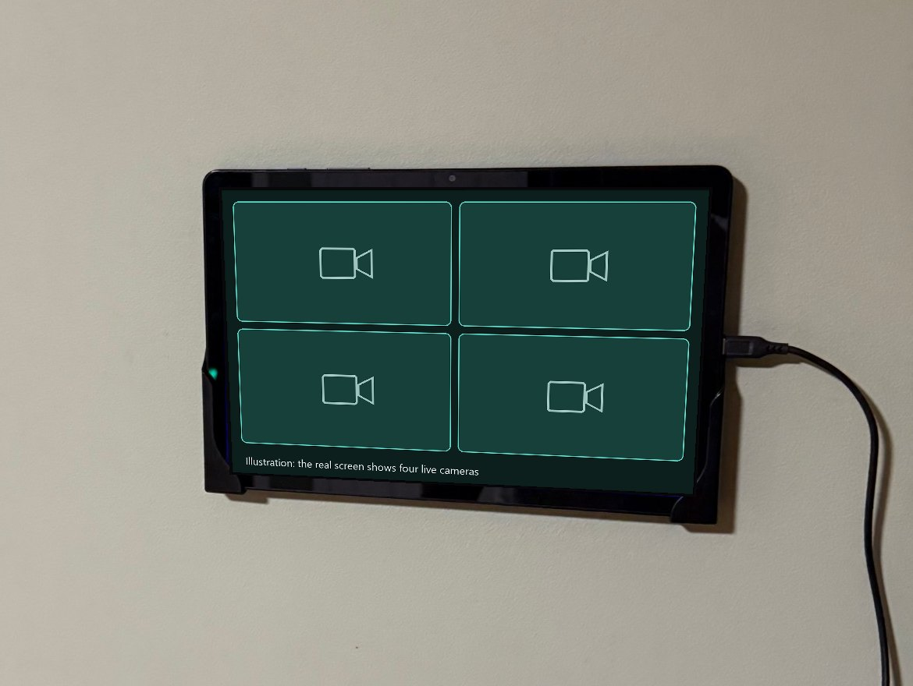
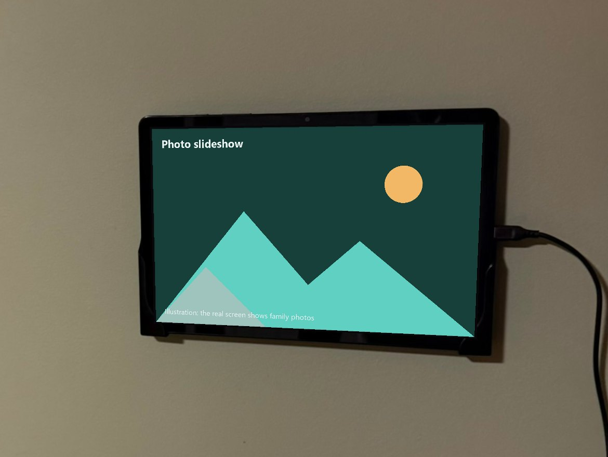

Homelab · Displays
Screens that show photos until someone arrives
A wall tablet and the TV show family photos by default and switch themselves to live cameras when someone arrives or the garage opens. When it is safe, they switch back on their own.
- Screens
- 2wall tablet and TV
- Camera hold
- 90 sper session
- Cameras
- 4on each grid

Photo mode and camera mode
Both screens run one Home Assistant dashboard with three views. A dedicated Home Assistant user named Tablet gets kiosk mode, so the tablet shows no sidebar or header. Fully Kiosk, a kiosk browser app, runs the tablet. Browser Mod, a Home Assistant extension that lets Home Assistant drive a browser, runs the TV.
| View | Screen | What it shows |
|---|---|---|
| Photos | Tablet and TV | An Immich Kiosk slideshow, embedded as an iframe that fills the screen edge to edge. A camera icon, top right: tap starts a camera session, hold jumps straight to the cameras. A garage door icon opens the door's controls. |
| Cameras | Tablet | Four cameras in two columns: front yard, front door, back yard, garage. Menu and status bar hidden. A back icon returns to photos. |
| TV grid | TV | A separate four-camera grid in two columns: front yard, front door, garage, back yard. Each camera has its own aspect ratio, so the grid fills a 16:9 TV with no gaps. |
The photos come from Immich, the photo library on the server, through Immich Kiosk, a slideshow app. The full-screen fit uses a trick: the iframe sits inside a picture card whose image is an empty 16:9 canvas, so the card sizes itself to the screen. The camera grids use Advanced Camera Card, a dashboard card for live camera feeds. The front door tile comes from Frigate, the camera recorder with AI detection.

The display session
One automation joins six kinds of device: the garage controller, the doorbell's person and visitor sensors, three presence sensors, a chime stored on the server, the tablet and the TV.
- TriggerGarage opening, a doorbell person or visitor event, or a presence sensor held for 2 to 3 seconds
- LatchA helper is set first so more motion cannot restart the session
- TimerA 90 second timer starts
- ChimeA sound stored on the server plays on the tablet and the TV
- SwitchThe tablet loads its cameras view and the TV goes to its camera grid
- ReturnBack to photos once the timer ends, the garage is closed and the doorway is clear
The latch matters because a person at the door keeps tripping sensors. Without it, each new motion event would start the session over. A second automation clears the latch when it sends the screens back to photos. That automation also runs when Home Assistant starts up, so a restart sends both screens back to photos.
The garage warning banner
When the garage auto-close turns on its alert helper, a pulsing red "Garage Open!" banner appears bottom left on both the photos view and the cameras view. It is drawn with card-mod, a plugin that lets a dashboard card take custom CSS: a ::before pseudo-element whose display is set by a template on input_boolean.garage_alert. No extra card is needed, and the banner sits over whatever the screen is showing.